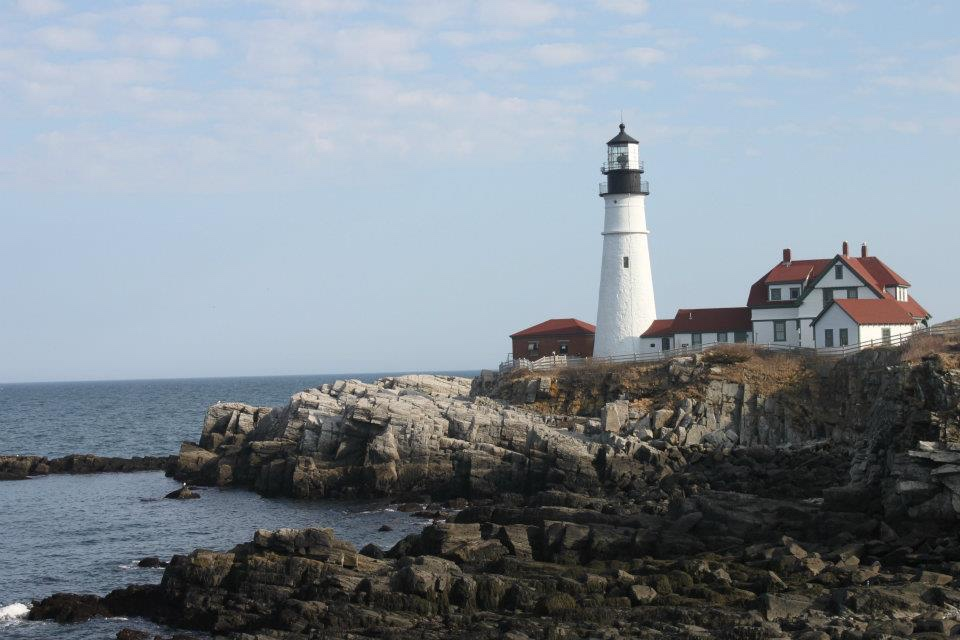

06.16.18


Our Ceremony will be held at 3 p.m. at First Parish Congregational Church in Saco, Maine.
Address: 12 Beach St, Saco, ME 04072 Formal or semi-formal attire requestedOur reception will be at 5 p.m. at Village by the Sea in Wells, Maine.
Address: 1373 Post Rd, Wells, ME 04090 Please RSVP on the tab to the right.Dinner will be a buffet menu including the following options as entrees:
Haddock Au Gratin with cheese sauce Prime Rib Vegetarian option
The following links will connect you to all the places we have made a registry
Portland International Jetport (PWM)- Portland, ME
Manchester-Boston Regional Airport- Manchester, NH
Boston International Airport (Logan)- Boston, MA
Directions from Boston:
Note: Amtrak also provides rail service from the Boston North Station to Portland, ME. In addition, buses are available from Logan Airport.Directions from Manchester:
Directions from White River Junction:
Directions from Burlington:
Quickest route (4 hours)- I89 South to White River Junction; Take I93 South Exit toward Manchester/Boston; Take left exit for NH 101E towards NH seacoast/Portsmouth; Take I95 North exit toward Portsmouth; Continue until Maine I-95 Exit 36 (Saco/Old Orchard Beach)
General Map of First Parish Congregational Church (Ceremony area) Location:
12 Beach St, Saco, ME 04072
General Map of Village by the Sea (Reception area) Location:
1373 Post Road, Wells, ME 04090Brenda Warman
Maid of Honor I met Brenda on an Alternative Spring Break trip to Tennessee in March of 2015. We clicked from the start and started hanging out and talking regularly. I am so glad I met someone as special as you Brenda! Thank you for sharing in my special day. Brenda is currently a Graduate student at the University of Vermont getting her Masters so that she can be a Licensed Clinical Health Counselor.Caroline Suresh
Maid of Honor My sister and I used to be the best partners in crime (AKA 'Fantastic Four', Summers 2005-2006) and she still is the probably the best mind-reader (of me) that I know of... :) We have our differences for sure but I love you and I'm so proud of you- my wicked smart and passionate sister. Caroline is currently a second year medical student at New York Medical College in Valhalla, NY.Andrew Calkins
Bridesman I met Andrew in 2009 while working in a Neuroscience lab at Bowdoin. Together, Andrew (and Audrey Bergeron) and I became the "3 musketeers" during our time at Bowdoin and for a few years after as well. Andrew has been a very good and trusted friend and I thank you for that! Andrew currently does research at Dartmouth College in Hanover, NH.Ignatia Chen
Bridesmaid Ignatia has been a strong behind-the-scenes support structure for me since I met her at Bowdoin. Unfortunately, due to unforeseen circumstances, she won't be able to make it over to Maine on my wedding day. However, I would still like to acknowledge her as my bridesmaid in my heart. I am glad for all the times you have lifted me up when I was feeling down Ignatia. Thank you for everything. She is currently living and working in Colorado.Allison Devins
Bridesmaid Allison is Brian's youngest sibling. She has been immensely helpful in planning Abbi's bridal shower with Brenda and Caroline. Allison and Brian have always been close. She is currently living and working in Burlington.Christopher Potter
Best Man Chris and I met as freshmen at Clarkson where he lived across the hall from Spencer. We knew him as Potter because both he and his roommate were named Chris so obviously we needed a way to differentiate between them. We really became friends during Sophomore year when the engineering students started to take their specialized classes and he and I were taking most of the same ones. We would eventually live together in 4 person dorms during Junior and Senior years, and both had internships at IBM our last summer of college. Chris first met Abbi at Thanksgiving of 2016 when we had lunch/brunch at American Flatbread and told her of his plan to buy a castle one day. Chris currently lives in Poughkeepsie, NY.Spencer Tobin
Groomsman Spencer is my oldest friend. I don’t actually remember when we first met but I assume it either involved youth hockey or soccer. We spent a lot of time in school together, and annoyed a few teachers in the process, including both of the Heeremans’. We ended up both applying to Clarkson and both going. Spencer had a car during college and so he and I would make the 4 hour treks back and forth with me paying for gas and snacks. He would end up rooming with Chris and was part of the 4 person dorms. Spencer currently lives in Erie, PA.Joseph Andrist
Groomsman Joe is the last member of our 4 person dorms, and was my roommate from the middle of Sophomore year until the end of college. He moved onto my freshman floor for second semester and became my friend. Joe and I bonded over our love of computers and movies. He had the sound system that could get the RA to pound on the door because the movies were so loud he could hear it downstairs. Joe was one of the people who helped me break out of the shy person I was when I came to Clarkson. Joe now owns a house and lives in Albany, NY.Daniel Devins
Groomsman Dan is my brother. People who know us know we don’t always get along, this is definitely evident in the fact that he chose to follow me onto the high school cross-country team and then follow me all the way to Clarkson for college, and to Dealer.com for work. Of the almost 4 years I have lived in Burlington, Dan and I shared an apartment for 2 ½ of it. While Dan and I are wildly different people we both enjoy hockey, good beer, and good food. Dan lives in Burlington, VT.Stay at our reception area:
10 suites have been blocked out (NOT paid for) at Village by the Sea until May 15th, 2018. Please call and book with them before this date and state that you are with the "Suresh & Devins Wedding" to confirm/pay for your room if you would like to stay here. Phone number to call: 1-800-444-8862 1 bedroom units: can fit 4 guests [Price: $119/night before tax] 2 bedroom units: up to 6 guests [Price: $159/night before tax] Village by the Sea **Please note: The above rates are for the lower level. If you would like an upper level room which has a view towards to the ocean it is an additional $20/night in addition to the above costs**Other hotels/motels around the area:
Elmwood Resort Hotel Hampton Inn Ramada (Wyndham Hotel)Things to do around Southern Maine & Places to Eat (An abbreviated list)
* Portland Headlights * Cape Elizabeth- Fort Williams Park * Maine Mall * Old Orchard Beach Southern Maine Tourist spots
Places to eat around Saco: Run of the Mill (American) Skippers (Quick Seafood) Traditions (Italian Restaurant) Pizza by Michael's Places to eat around Wells: Fisherman's Catch (Old school seafood place) Litchfield's Bar & Grill (American, Sports) Féile Irish Pub and Restaurant Mike's Clam Shack Places to eat around Portland: Duck Fat (Sandwiches) DiMillos on the Water (Seafood restaurant in Old Port on the Harbor) Flatbread Company (Pizza) Boda (Thai) Taj (Indian)
This webpage was designed by Abishag Suresh